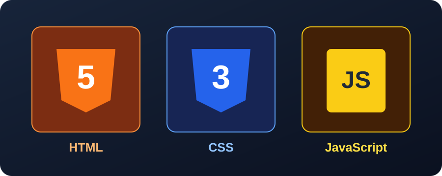

HTML
HTML
Es el lenguaje que organiza el contenido de una página, como títulos, párrafos, imágenes, tablas y formularios.
Función: estructura del contenido.
Herramientas y tecnologías
Los sitios web utilizan diferentes lenguajes y herramientas para organizar información, diseñar interfaces y crear experiencias interactivas.
Cada tecnología tiene una función. En conjunto permiten construir páginas web completas, desde su estructura hasta las acciones que puede realizar el usuario.

Es el lenguaje que organiza el contenido de una página, como títulos, párrafos, imágenes, tablas y formularios.
Función: estructura del contenido.
Permite modificar colores, tamaños, fuentes, espacios y la distribución de los elementos.
Función: presentación visual.
Añade interactividad y permite responder a acciones, comprobar formularios y actualizar contenido.
Función: comportamiento e interacción.
Permiten almacenar y consultar información, por ejemplo, los datos de usuarios o los productos de una tienda.
Función: gestionar información.
Son protocolos que permiten intercambiar información entre los navegadores y los servidores web.
Función: comunicación web.
Herramientas como Git ayudan a registrar cambios, recuperar versiones anteriores y colaborar en proyectos.
Función: administrar cambios en el código.